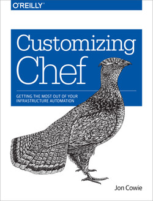

Jon Cowie
Product Strategy Architect (AI & Emerging Tech) @
Progress.
Stuff I've Written

You can find me @
How can you contact me?
- Email: me at jonliv dot es
Stuff I've Coded
- Oculus - The anomaly correlation component of Etsy's Kale stack
- JawboneUp To Graphite - A script for posting Jawbone Up metrics to Graphite
- Ipecache - an extensible tool for purging URLs from Caches and CDNs
- Knife Preflight - a Knife plugin for checking which roles / nodes use a cookbook or recipe in Chef
- Knife BulkChangeEnvironment - a Knife plugin for moving Nodes between environments in Bulk in Chef
- Knife Flip - A knife plugin to quickly move a node between environments
- Knife Spork - a Knife plugin for simplifying the environment workflow in Chef
- Nagios Jenkins Plugin - a Nagios plugin for monitoring Jenkins / Hudson builds